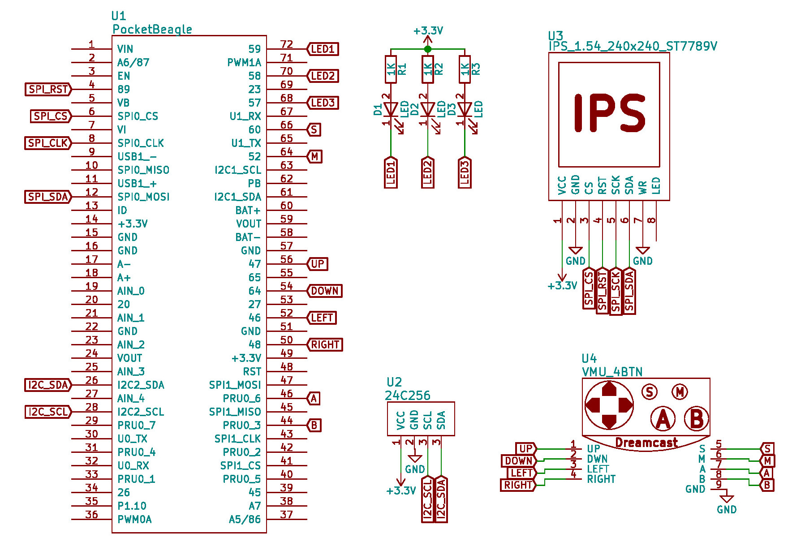
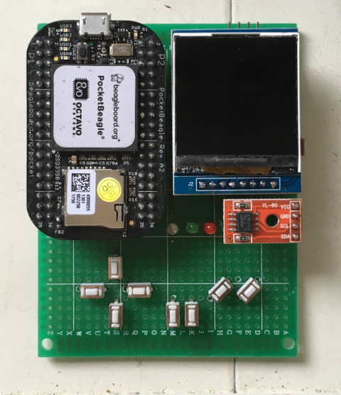
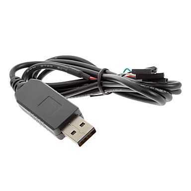

Linux Device Driver >> Assembly (ARM)
開發環境
如果使用者對嵌入式系統感興趣，則Linux就是一門必學的課程，畢竟現在的系統都是上Linux居多，站在Linux這個巨人的肩膀上，拓展自己需要的東西，才可以快速達到自己的目標，雖然Linux指的是Kernel部份，不過就目前大家習慣的稱呼，它已經變成是一個整體OS的概念，雖然Richard Stallman一直在跟我們闡述這個觀念，無奈大家還是這樣認為，司徒也是習慣把Linux當作是一個整理OS看待，哈！雖然目前Linux Kernel的走向已經走向配置DTS(Device Tree Source)的方向，只要Kernel夠具規模，一般使用者不須專注在Linux驅動程式上，只要知道如何修改DTS就可以，但是即便如此，遇到底層問題或者需要優化時，驅動程式還是佔據一個關鍵因素，因此，不是碰不到，只是時機未到，司徒建議走嵌入式的使用者，多少還是要了解一下驅動程式的東西，將來會有用到的一天。
相較於Windows驅動程式，Linux驅動程式會比較偏上I/O操作的應用，這部份的測試環境就比較不適合使用一般PC，雖然還是可以使用QEMU模擬器，但是，基本上還是存在一些落差，因此，司徒想了想決定使用ARM開發板當作測試環境，剛好也可以整理ARM Assembly和C++的相關教學，於在司徒心中浮現的就是Raspberry以及Beagle這兩大陣營，而司徒只對比較小的開發板有興趣，因此，針對Raspberry Pi Zero和PocektBeagle，司徒最終選擇PocketBeagle開發板，當然使用者也可以用Raspberry Pi Zero當作測試環境，而司徒知道多數人是不喜愛焊接，因此，教學的部份盡量以2.54mm排針為主，這樣只要使用杜邦線就可以連接，於是，司徒製作如下電路圖：

完成後的板子如下

接著還需要準備一條USB轉RS-232(3.3V PL2303或者FDTI都可以)用來輸入命令，接線只要連接PocketBeagle U0_TX、U0_RX和GND即可

接著下載司徒已經做好的SDCard燒錄檔案(PocketBeagle)並且燒錄到SDCard，接上USB電源(Kernel需要等待5秒)就可以看到登入畫面(密碼：root)
Welcome to PocketBeagle pocketbeagle login: root #
這個燒錄檔案的第一個分區是FAT並且開機後會自動掛載在/boot底下，因此，使用者可以很方便把編譯好的驅動程式放到該磁區並做測試，如果使用者想要自己製作系統和編譯Kernel，可以參考司徒的PocektBeagle教學文章。